Horsemanship Pages
- *Home
- *Sitemap
- *SEARCH THE SITE
- *Horse History
- *Horseman Tips
- *Horsemanship
- *Amazing Horse Hoof
- *Horse Anatomy Pictures
- *Rope Halters
- My Random Horse Thoughts
- *Tying A Horse
- *Bosal/Hackamores
- *Bad Horsemanship
- *Misc Horse Info
- *Trailer Loading
- *Training Videos
- *Hobbles
- *Horse Articles
- *Health and Medical Info
- Horse & Rider Fear
- Opposition Reflex
- *Answers to Questions
- *Cowboy Wisdom
- *Cookie Recipe for Horses
- *Horse Jokes
- *Cowboy Weather
- *Sites and Links
- *A Horse's Prayer*
- *Photos Rick and Horses
- *Clinics on Request*
- *Contact Rick
Think Like A Horse - Horse Hobble Training
Rick Gore Horsemanship

Horses love it when their owners understand them.
Horsemanship is about the horse teaching you about yourself.
Hobbles:
Hobbles are a great tool for all horsemen. Some think hobbles are mean or cruel and if used the wrong way, I would agree. Hobbles are an advanced "sack out" technique that will give your horse confidence, enforce your leadership position, teach pressure and release and build trust. It teaches horses to give to pressure and learn to deal with being trapped. It desensitizes a horse's legs to being confined, trapped or stuck. A hobble-trained horse is less likely to tear his leg off if he ever is caught up in wire or a fence.
leadership position, teach pressure and release and build trust. It teaches horses to give to pressure and learn to deal with being trapped. It desensitizes a horse's legs to being confined, trapped or stuck. A hobble-trained horse is less likely to tear his leg off if he ever is caught up in wire or a fence.
Hobbles have a long history in horse training. In the past they were used has a way to break the horse's spirit, to take the fight out of a horse and to 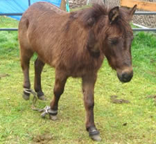 dominate a horse. I do not use them for that and do not recommend them for that use. In the days of horseback, when most all transportation was by horse, there were not tie post or tie points everywhere. By placing hobbles on a horse, you were able to secure your horse in open areas with no trees or tie points. That way in morning, your horse would have grazed all night, but would not have traveled miles away from you and your camp site. A horse can still defend himself if hobbled and can still kick and run. If you are out riding and do not have a lead rope or place to tie a horse up and you need to relieve yourself, you can hobble your horse, take care of business while your horse snacks and relaxes. See a video on Hobble Training: Click Here
Hobble training your horse will teach him patience, will teach him to give to pressure, will teach him not to panic if his legs are trapped and it comes in handy if you have no place to tie. It is important in the training process to teach the horse to give to pressure without panic. I do this with a soft cotton rope and work on each foot and the body. By putting the rope on one foot and putting pressure on until the horse lifts his foot and then release. Soon you will be able to lead the horse with a rope on any foot. After the feet are done I put a rope on the girth of the horse and teach him to lead from that pressure. Each time I teach a horse to give to pressure, he will learn to give to pressure in other ways. Prior learning makes later learning easier. After making sure you desensitize all the feet good, you can put the hobble on. Make sure you are in a soft area that is enclosed and safe. Also, make sure you have a lead rope and halter on your horse. The time you put hobbles on a horse they normally get off balance and will fall to their knees, you have to be ready to keep the head up and prevent it from hitting the ground. Another common action is the horse may jump or rear forward and up, you need to be ready to react, take control and calm the horse, so you can help him through his fear. Once the horse struggles a bit, the will stop and stand still looking to you for help, if you have sacked them out correctly. As soon as they stand still, you being very calm, take the hobbles off, reassure the horse and then have it slowly walk off a few steps. This tells him he is not trapped and can move now. All training time as many side benefits. It teaches you to better understand your horse, it causes you to spend time with your horse and it allows your horse to learn you, your behavior and your cues. All build trust and a better relationship.
After the first hobble and removal, then put the hobbles back on and just stand with the horse with the lead rope ready to support the head if he falls. He may just try to lift each leg and test the hobbles; if he does, praise him and let him know it is OK. By talking or distracting the horse, he will forget about his fear and being trapped and it helps him learn to deal with his fear of the unknown. If he calms down and stops testing, about 20 seconds, then take them off and let him stand, he will not move since he thinks he is still hobbled. Then ask him to take a step or two and relax. Then put them on again, this time he should test and struggle less, now you can try and walk to his butt and get him to move his back legs. If he does this just a little, stop and praise him, let him stand for a few seconds and take the hobbles off. Let him stand after you take them off and then ask him to take a few steps and show him he can move.
All of this tells him, that he will not be trapped forever, it is no big deal to have hobbles on and you will take them off. After you establish a routine for him, then he will be less stressed.
Then maybe put them on one more time and have him move his butt both ways at least a quarter turn and no more than a half turn. Then let him stand while still hobbled for about a minute or two and then take them off. That will be a good start.
After a few times of doing this in a nice soft area with sand or soft footing, then you can take him out to nice green grass and hobble him and let him eat and graze. Here he will learn how to move and eat and to not worry about his feet being trapped. Keep him on a lead rope for the first few hobbles to help him balance and having you holding the lead rope and near the horse, it will give him confidence and routine. Most horses only fall to their knee once and then they stop, as long as you stay calm and help them up and "Don't make a big deal" out of it. If you act like you expected it and deal with from a position of calm, then the horse finds calm in your actions and behavior. Remember a horse is only a reflection of the person handling him. If the person is calm, confident and in control, then the horse will be the same way.
The first few hobbles should not be over a minute or two, the more you put them on and take them off, the more the horse will accept them and will not panic. After you have a good foundation, then you can start putting them on longer and in different areas.
Watch my video on Hobble Training: Click Here
I had a lady who called herself a "Dressage owner" who wrote me for advice on handling her horse.  She got mad at me for telling her she was the problem with her horse acting out. She was upset, so she blamed me and then said had she known I used hobbles she would have never asked me a question. (Too bad we cant send horse owners off to trainers instead of their horse.) I just shake my head at people so narrow minded and then think about their "Poor Horse" for having to deal with them. Hobbles are about teaching your horse to release to pressure, to trust you even when you take away his ability to move and not to panic when trapped. This is good for any horse in any discipline. Just because I ride western and hobbles are mainly used by western riders, does not mean that all horses and all horse owners cannot grow and gain from using and learning about them. Horsemanship is about the Horse, not the person, the style of riding or what discipline you practice. You teach a horse that you are a leader by moving them or by restricting their movement. When you control their feet and mind you show your leadership ability. That is what makes good and calm horses.
She got mad at me for telling her she was the problem with her horse acting out. She was upset, so she blamed me and then said had she known I used hobbles she would have never asked me a question. (Too bad we cant send horse owners off to trainers instead of their horse.) I just shake my head at people so narrow minded and then think about their "Poor Horse" for having to deal with them. Hobbles are about teaching your horse to release to pressure, to trust you even when you take away his ability to move and not to panic when trapped. This is good for any horse in any discipline. Just because I ride western and hobbles are mainly used by western riders, does not mean that all horses and all horse owners cannot grow and gain from using and learning about them. Horsemanship is about the Horse, not the person, the style of riding or what discipline you practice. You teach a horse that you are a leader by moving them or by restricting their movement. When you control their feet and mind you show your leadership ability. That is what makes good and calm horses.
WARNING: DO NOT USE CHAINS ON HORSES:
Chains and horses = Stupidity, don't do it. If you look close at this horse's hooves you can see cuts where this chain as already cut the poor horse's legs. So now this horse will associate hobbles with pain, he will have more fear of being trapped, he will not trust the handler since he will associate the handler with pain.
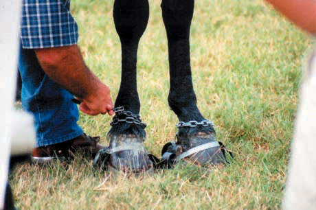
See my video on Sacking Out:Click Here
So, investing some time in training your horse to use hobbles will pay you back in big dividends. You will gain his trust, teach him it is OK to be stuck or trapped,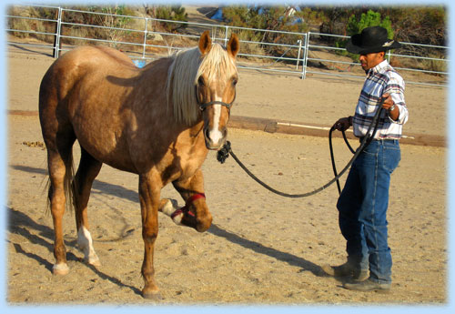 teach him to think when trapped and not react, pull and panic. Not to mention that the more you teach a horse, the better you and your horse become, the more you reinforce your position as leader and you let your horse know that no matter what happens, when he is with you, he will be safe and not hurt.
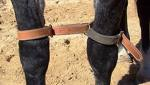
Some people place hobbles high and above the knees on the horse's front legs. The theory being that this allows less movement than with them lower on the ankles. These hobbles are a standard type of leather (figure 8)hobbles. Cost can be from $20 to as much as $200. I put hobbles on the ankles since I like my horse to take baby steps, graze, roam and move around.
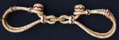
These hobbles are made of raw hide that is braided, much like a raw hide bosal. No metal snaps or buckles to cut the horse and are stronger than leather. The can be more expensive and range from $100 to $300. You don't want a horse to break a cheap set of hobbles or they learn to fight and pull thinking they can break free. 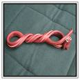
This is twisted leather hobble (left). No buckles or metal, can also be twisted rope. 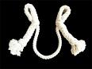
These rope hobbles (right) are made of soft cotton rope and will slide to open and close around the horses feet. Some believe that these should be used to train your horse to hobble. If you do your preparation correctly, I think you can train in leather hobbles, since that is what most people carry on their saddle. 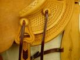
The leather holder under the first saddle string (left)is called a hobble holder. This is where most horsemen carry their hobbles while riding.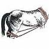
These hobbles (to the right)are commonly called breeding hobbles. As the name implies, they are used when breeding to prevent the mare from kicking a Stud and damaging his future baby making tools.
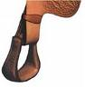
The little leather strap above the stirrup is also called a stirrup hobble, not to be confused with horse hobbles.
Nursing hobbles are applied to a nursing mare's hind legs when there is a reason to believe she may kick the foal - for example, when she is being asked to take on an orphan. These hobbles are generally lined with fleece so they won't cut into the mare's legs and they are used only until she accepts the foal she is expected to nurse or until she stops being aggressive to her foal. They have enough give to allow her to walk around the stall.
When there are no suitable objects to which a horse can be tied, it may be possible to use hobbles. This might be useful on trail rides or when stopping in an open park or pasture. The horse must first be trained to accept the hobbles. This is best done when the horse is first being trained, by an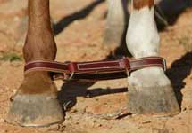 experienced horse person in a round pen or confined area, with soft ground or sand. The first time hobbles are put on a horse they will probably stumble and may fall, so make sure you have a lead rope and halter on so you can support the head if the horse falls. Some horses can travel a fair distance when only the front legs are hobbled to each other. Once your horse learns to run and move with hobbles, you may have to use sideline hobbles or tie a lead rope to the front hobbles to slow the horse down. Most horses if they trust you and look to you for safety and security will not want to leave you and will try to follow you a bit. So some small movement is not all that bad.
Training for hobbles should be low stress and should be done without 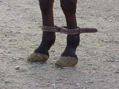force or fear. The horse should not be nervous or fearful if it is done right. Lots of sacking out and desensitizing the feet, legs and teaching the horse to give to pressure and not panic when their legs are trapped or restricted. Lots of release and keeping the horse calm. The horse should be gaining trust in you, not fearing you.
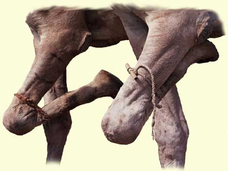
Camel Hobble: This style of hobbling is used on camels to prevent them from running off. Some do this to horses. You have to be careful and not leave it on too long or it could do damage. I would only do this for an emergency to take down a horse for emergency vet care or to save a horse from hurting himself. Again you must be careful not to hyper extend the knee joint, hurt the horse or put the horse into fight mode from his instinctual fear.